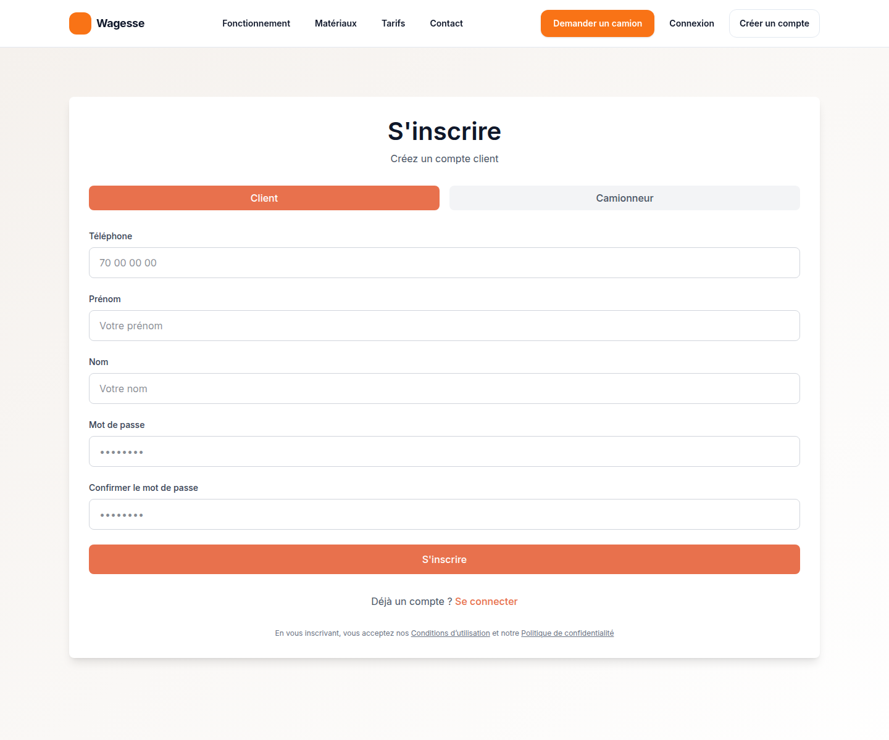
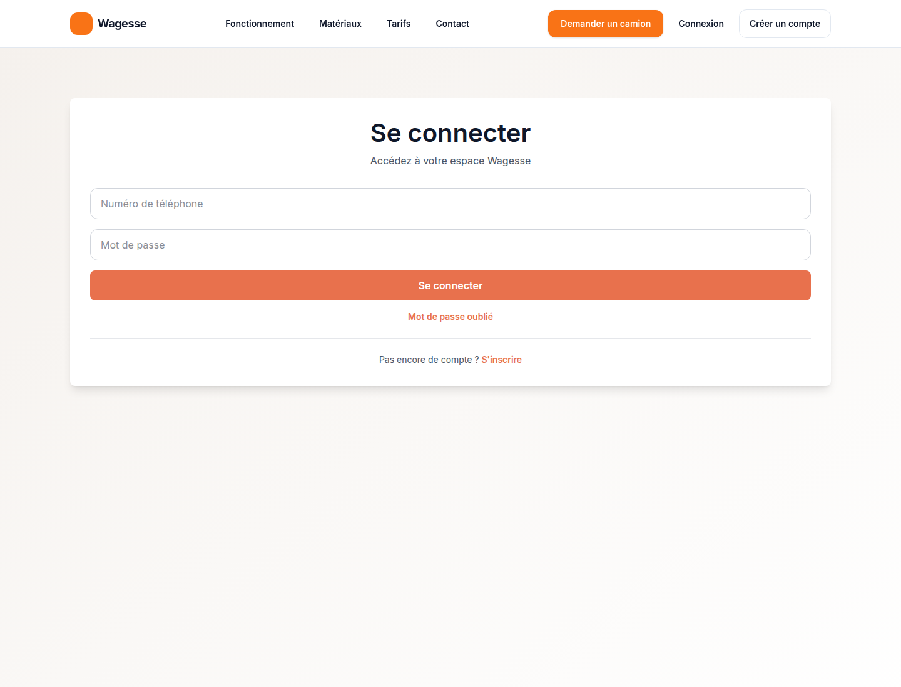

WAGESSE
Préproduction https://preprod.wagesse.fr, 7 novembre 2026. Les captures viennent du serveur déployé.
/dashboard/trucker.

En authentification simple, le SMS n'est pas exigé pour consulter les demandes, envoyer un devis ou conduire une mission. Le profil reste en attente de validation administrative, comme aujourd'hui : cette validation est un acte d'administration, pas un blocage automatique des devis. L'administration n'est pas accessible : l'API répond HTTP 401.
Dans le cycle final, le transporteur de recette a envoyé un devis de 150 000 XOF sur la demande de sable. L'acceptation a été refusée tant que le client n'avait pas débloqué le contact.
Après l'acceptation, le transporteur avance la mission dans cet ordre :
Le client confirme ensuite la fin. Si le transporteur tente de terminer la mission lui-même, le serveur répond HTTP 400 et le statut ne change pas.
La mission cmw6ykr8q001plbcf2wt7gjic a suivi cet enchaînement et reste COMPLETED en base.